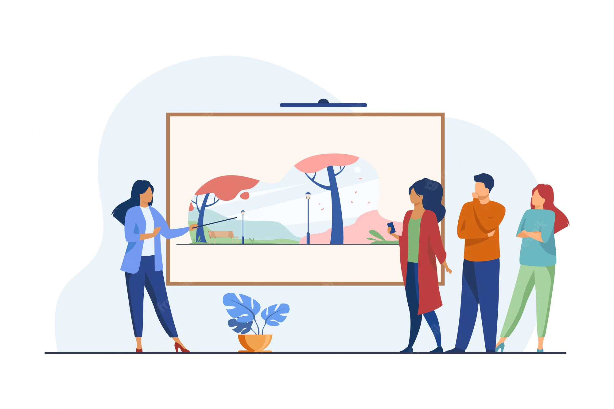
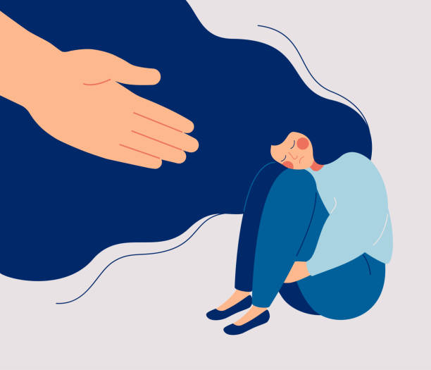
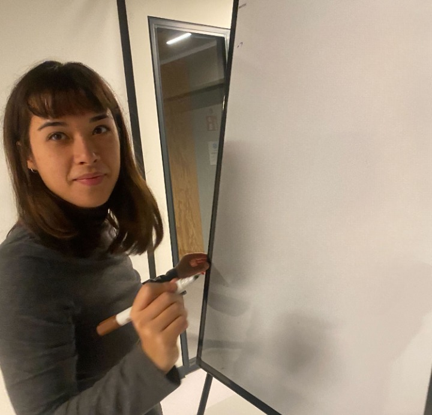

I'm french living in Berlin, i just finished my studies in UX/UI Design after my Master's degree in Digital Strategy & Communication. I'm curious and committed to a better world 🌎
Having just finished my studies in Paris in a Master's degree in Digital Strategy & Communication, I am currently training in UX/UI Design and Graphic Design to develop complementary skills to my diploma, in order to find my first post-study job in the city of Berlin.
I had the opportunity to develop my skills as a project manager and communication/marketing manager within the start-up Intripid, the large French supplementary pension company Agirc-Arrco (public service), and recently from the start-up Sand Fabrik.
My case studies
Redesign Urban Sport Club app
2 week's project

Preserve and make culture accessible
7 week's project

Support for depression people
6 week's project
Creation of a professional website
4 week's project
About me

I have always wanted to contribute to people's happiness and to a better world tomorrow. Promoting equality/equity, fostering social ties, acting for our environment and highlighting the importance of culture are subjects that punctuate my daily life.
I am looking for a job that makes sense for me and for our society, and I will gladly put my skills at the disposal of the needs of the company that corresponds to my values.